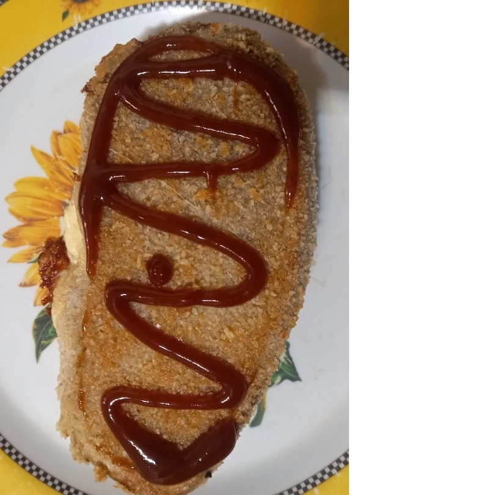

Receta de milanesas de berenjenas rellenas con panceta ahumada y queso

Para un almuerzo rápido, muy sabroso y saludable.
Especial para quienes tienen poco tiempo
Lista de ingredientes
- 2 Berenjenas grandes
- 8 Fetas de panceta ahumada
- 4 Fetas de queso de máquina
- 1 Huevo
- 200 gr. de Pan rallado
- 6 cdas. de Maizena
- 3 cdas. de Sal gruesa
- Aceite
- Pimienta
- Orégano
- Ají molido picante
- Condimento para milanesas
Pasos a Seguir
- Lavar y pelar las berenjenas, cortar al medio y poner en un colador con sal gruesa durante 20 minutos
- Lavar y secar. Con un cuchillo hacer un bolsillo por el costado todo a lo largo
- Tomar 2 fetas de panceta, doblarlas e introducirlas dentro del bolsillo hecho a la berenjena
- Hacer lo mismo con 2 fetas de queso
- En un plato hondo colocar la maizena y empanar la berenjena
- En otro plato hondo o bowl colocar un huevo con pimienta y el resto de los condimentos
- Agregar el condimento para milanesas, batir todo hasta que quede bien integrado
- Pasar la berenjena por el huevo y luego por el pan rallado
- Llevar a horno fuerte. Una vez que está dorada dar vuelta
- Una vez dorados los dos lados retirar del horno y a disfrutar
Lee la receta completa en Las Recetas de Guillermo
Leer receta Milanesa de berenjenas rellenas